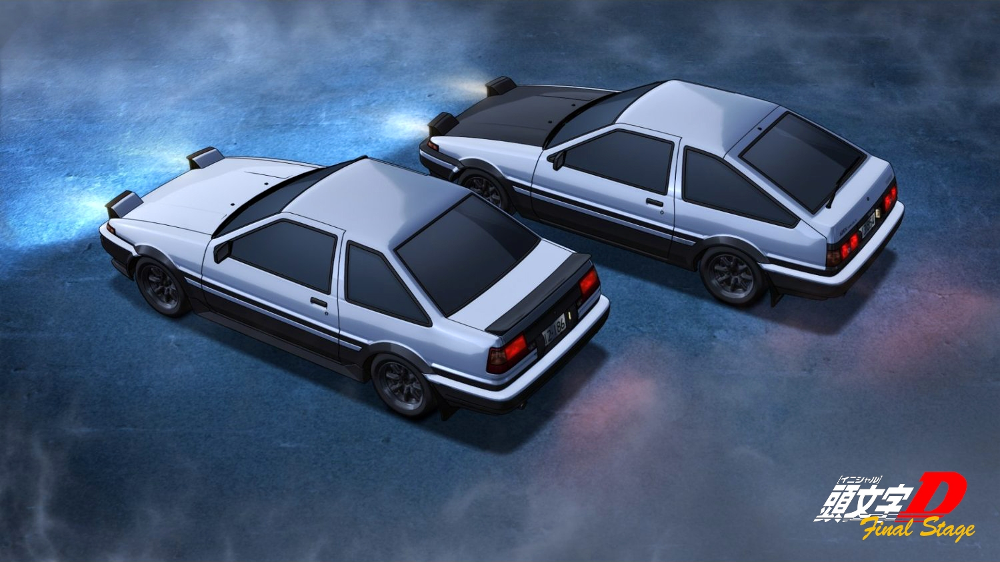
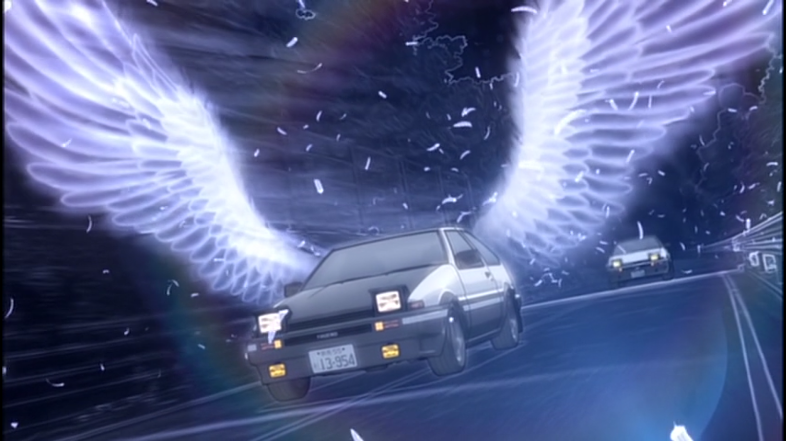

Ordem Cronológica
Final Stage
Depois de derrotar cada equipe de corrida em suas respectivas províncias, tudo se resume a uma última corrida.
Takumi Fujiwara nunca perdeu uma corrida, mas quando o seu adversário também está usando um AE86, essa se transforma em uma batalha de AE86.
Carros presentes
- Nissan Skyline GT-R
- Mazda RX-7
- Nissan 180SX
- Nissan SilEighty
- Honda Civic
- Toyota AE86
- Mitsubishi Lancer Evolution
- Subaru Impreza
- Honda civic
- Honda NSX

